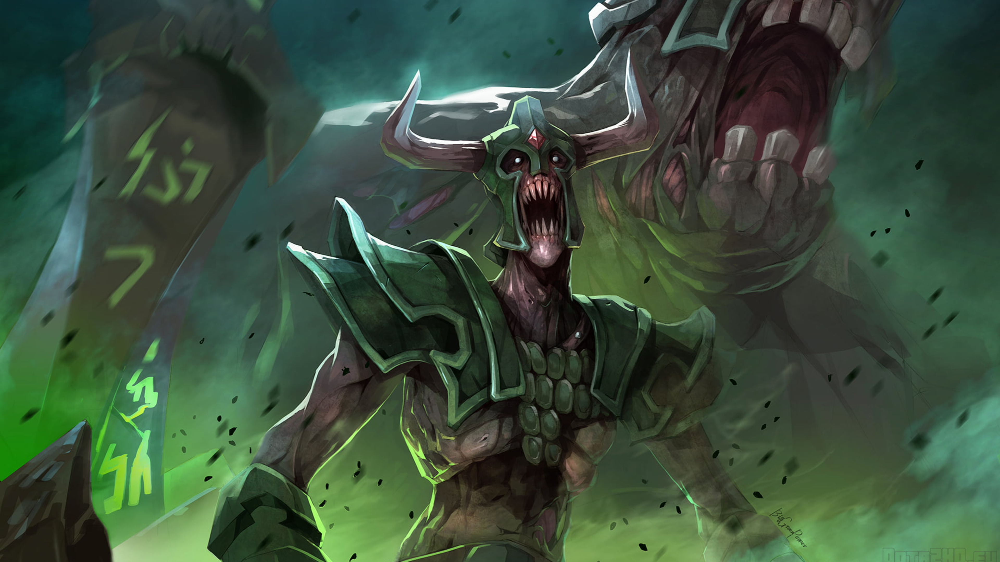

HTML/CSS WEBSITE MADE BY MARTIN (MIO) LUNA

HTML/CSS WEBSITE MADE BY MARTIN (MIO) LUNA
UNDYING

How long has it been since he lost his name? The torn ruin of his mind no longer knows.
Dimly he recalls armor and banners and grim-faced kin riding at his side. He remembers a battle: pain and fear as pale
hands ripped him from his saddle. He remembers terror as they threw him into the yawning pit of the Dead God alongside
his brothers, to hear the Dirge and be consumed into nothingness. In the darkness below, time left them. Thought left
them. Sanity left them. Hunger, however, did not. They turned on each other with split fingernails and shattered teeth.
Then it came: distant at first, a fragile note at the edge of perception, joined by another, then another, inescapable
and unending. The chorus grew into a living wall of sound pulsing in his mind until no other thought survived. With the
Dirge consuming him, he opened his arms to the Dead God and welcomed his obliteration. Yet destruction was not what he'd
been chosen for. The Dead God demanded war. In the belly of the great nothing, he was granted a new purpose: to spread
the Dirge across the land, to rally the sleepless dead against the living. He was to become the Undying, the herald of
the Dead God, to rise and fall and rise again whenever his body failed him. To trudge on through death unending, that
the Dirge might never end.
Undying, the Almighty Dirge, is a melee strength hero who serves as a formidable tank and a dangerous spellcaster. His
abilities force opponents to either kill him or suffer powerful debuffs in a teamfight. Decay is a spammable ability
that steals enemies' Strength in an area, making them more fragile and Undying himself more durable as the fight goes on
while also being exceptionally potent during the early laning phase, leaving your opponents with mere scraps of health.
Soul Rip can act as both a powerful heal or nuke, redirecting the flow of living energy to a target. By ripping some of
the health of his ally or enemy in an area, the target can be healed if an ally, or damaged if an enemy. This is
empowered by Tombstone, which acts as a static tank by summoning zombies to slow Undying's foes while active. With the
zombies summoned, Soul Rip can perform to its fullest, while Decay weakens Undying's foes. Finally, Undying can
transform into a horrific Flesh Golem. This transformation makes him substantially more tanky while allowing his attacks
to place a debuff that both slows and amplifies all subsequent damage to the target. Monstrous and truly horrifying,
Undying finds great pleasure in keeping himself alive and vital, while his adversaries suffer as he delivers death to
the field. With powerful abilities that allow him to perform well in large fights, the Dirge may never cease.